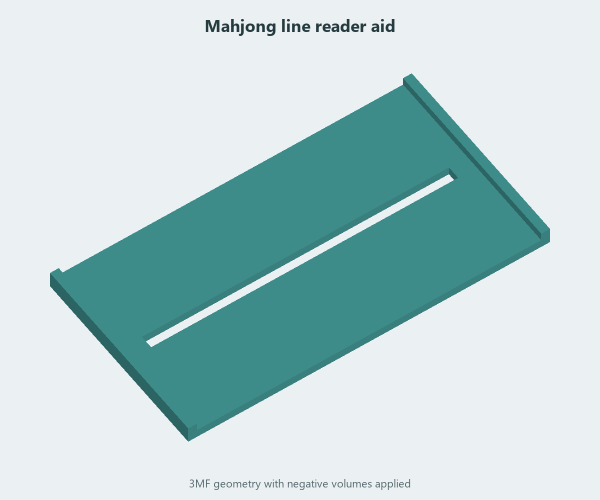

Game aids / Original design
Mahjong line reader aid
A slim reading aid with a long line opening and a recessed face, saved as an editable PrusaSlicer project.
- Saved dimensions
- 165 × 90 × 8 mm
- Line opening
- 140 × 6 mm
- Model format
- PrusaSlicer 3MF
- Design
- Made without AI
{kind=link}

Line opening and recessed face · 3MF geometry with negative volumes applied. Select the image to enlarge.
Keep your place on a Mahjong card
Beau’s original design uses a long, narrow opening to isolate a line while reading. The file contains the base and two subtractive boxes that form the opening and recessed region.
Print from the original 3MF
Open Mahjong Line Reader Aid.3mf in PrusaSlicer or a slicer that supports its negative volumes. Check the sliced preview to confirm the opening and recess are present. The original 3MF is provided because a plain STL export can lose the subtractive features.
Check card fit before printing
The saved project is approximately 165 × 90 × 8 mm, with a 140 × 6 mm line opening. Those dimensions come from the file geometry. Review your card’s layout, the project’s printer and filament settings, and the first layer before printing.
Design: Beau Gosse · Created without AI.
CC BY-NC-SA 4.0 · Noncommercial use, attribution, and share-alike.